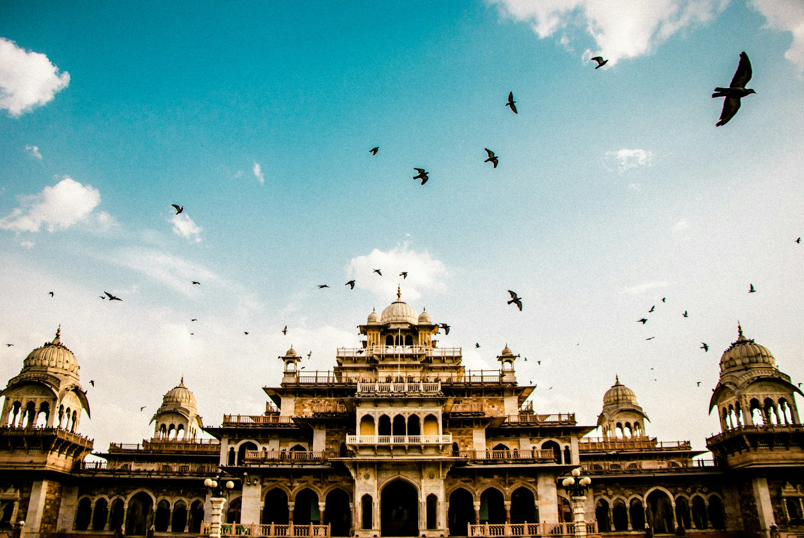
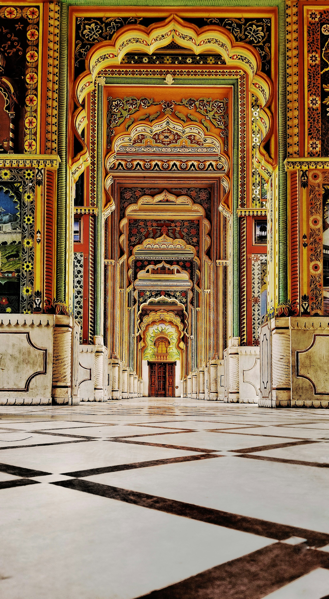
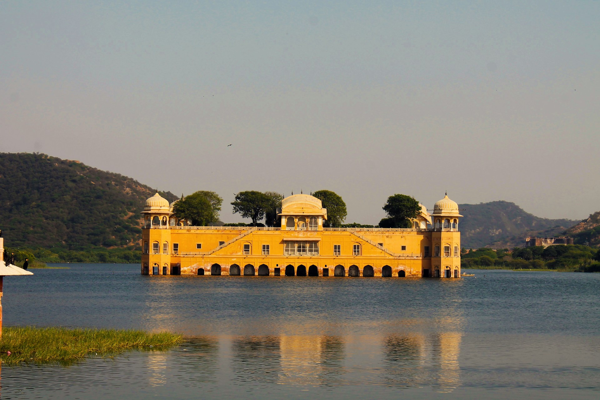

Jaipur, known as the Pink City, is famous for its forts, palaces, and vibrant markets.
The city showcases the grandeur of Rajputana culture with landmarks like Hawa Mahal, Amer Fort,
and City Palace.
Udaipur, called the City of Lakes, offers serene beauty with Lake Pichola, the Lake Palace, and stunning Aravalli Hills. Its romantic charm and royal history make it one of the most beautiful destinations in India.
Udaipur, called the City of Lakes, offers serene beauty with Lake Pichola, the Lake Palace, and stunning Aravalli Hills. Its romantic charm and royal history make it one of the most beautiful destinations in India.




Tips for Visit
- Best season: November–February for pleasant weather.
- Wear comfortable shoes for fort visits.
- Book lake-side hotels in Udaipur for scenic views.
- Try traditional Rajasthani food: Dal Baati Churma.

Ramesh Kumar
15 yrs guiding in Agra
⭐⭐⭐⭐⭐
Farida Begum
Mughal history specialist
⭐⭐⭐⭐☆
Imran Ali
Speaks English, Hindi, French
⭐⭐⭐⭐⭐
Priya Sharma
Cultural & heritage tours
⭐⭐⭐⭐
Local Services
| NAME | CONTACT |
|---|---|
| Tourist Helpline | +91-141-2222222 |
| Taxi Service | +91-9876543211 |
| Hotel Assistance | +91-141-2244444 |
| Emergency | 100 / 108 |
Nearby Places
| NAME | Location | Highlights |
|---|---|---|
| Jantar Mantar | Jaipur city | UNESCO site |
| Saheliyon Ki Bari | Udaipur | Garden of maidens |
| Nahargarh Fort | Jaipur hills | City view |